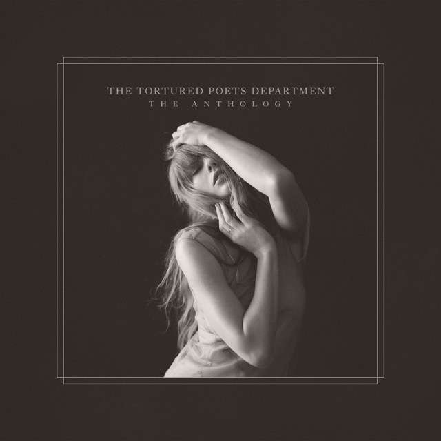

Ola!
nome é Débora Basílio, tenho 21 anos e sou de Maringá - Paraná.
Sou estudante de Análise e
Desenvolvimento de Sistemas
e atualmente trabalho no restaurante Jacaré Vermelho.
Uma curiosidade sobre mim é que sou uma grande fã da
Taylor Swift e esse é meu album favorito dela "The Tortured Poets Departament"

Clique nesse link do Spotify para ouvir essa obra prima Ir para Spotify